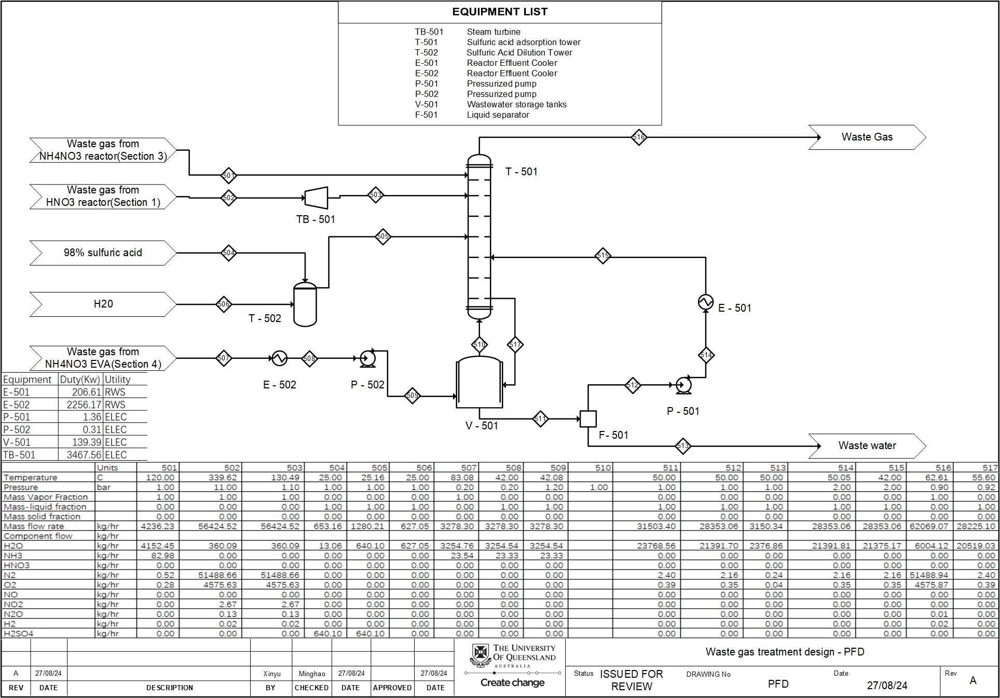
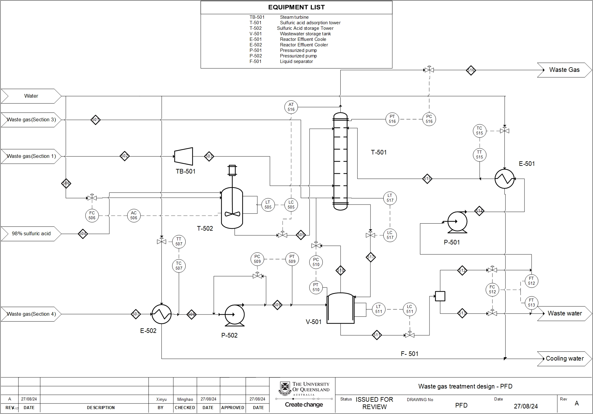

Ammonium nitrate plant design
CHEE4001 team plant design, with individual equipment, cost and control design for the off-gas treatment section.


Result scope
UQ team project. The individual report covers absorption, heat exchangers, pumps, turbine, storage and control loops; plant-wide work is credited to the team.